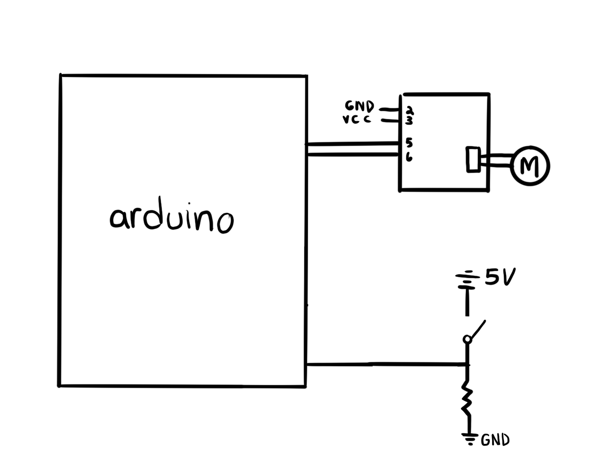

4: Microcontroller programming
This weeks assignment was to program an Arduino board to do something. I wanted to connect a button to a motor to make it run when it was pressed. I was a beginner when it came to coding in Arduino, but I was able to figure out how to use it enough in order to make the button do what I want.
Here's my code!
int buttonState = digitalRead(8);
const int A1A = 3; // define pin 3 for A-1A
const int A1B = 4; // define pin 4 for A-1B
void setup() {
pinMode(A1A, OUTPUT);
pinMode(A1B, OUTPUT);
digitalWrite(A1A, LOW);
digitalWrite(A1B, LOW);
}
void loop() {
if (buttonState == HIGH) {
digitalWrite(A1A, HIGH);
digitalWrite(A1B, HIGH);
delay(3000);
digitalWrite(A1A, LOW);
digitalWrite(A1B, LOW);
} else {
digitalWrite(A1A, LOW);
digitalWrite(A1B, LOW);
}
}
It was really fun learning how to code this, and the sense of accomplishment I felt after learning how to do it was great. I hope to incorporate the code into my final project for the button to dispenser part.
Below is a gif of my Arduino setup and how it works!

Finally, there's the circuit diagram. I wasn't super confident on how to draw it, but in the end I managed to.
Arduino was tough, but having a basic understanding of how it works is so important for my final project, and sticking it out will be worth it in the end.